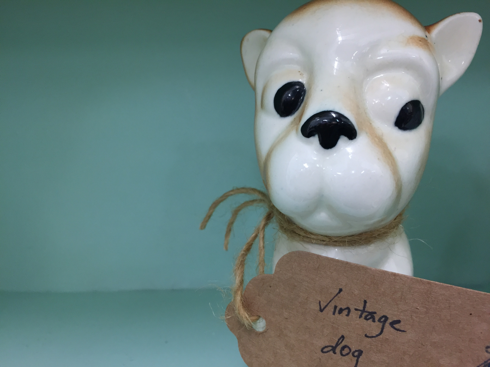
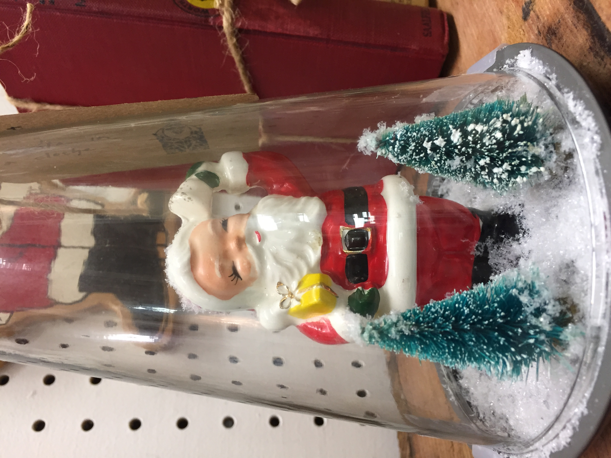
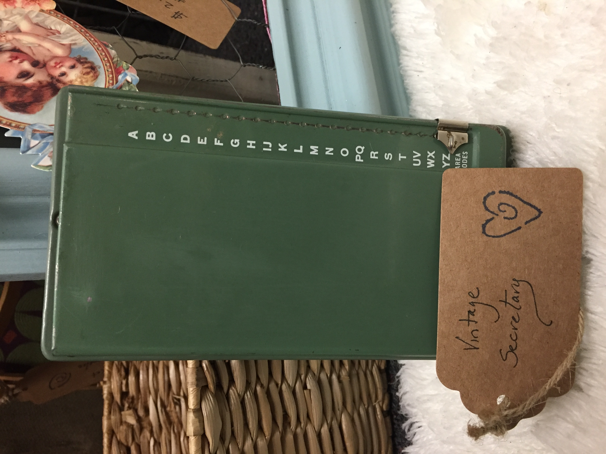
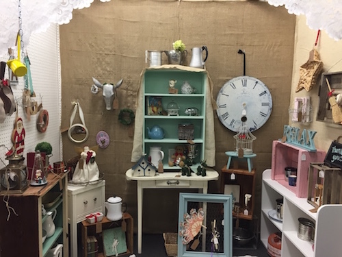
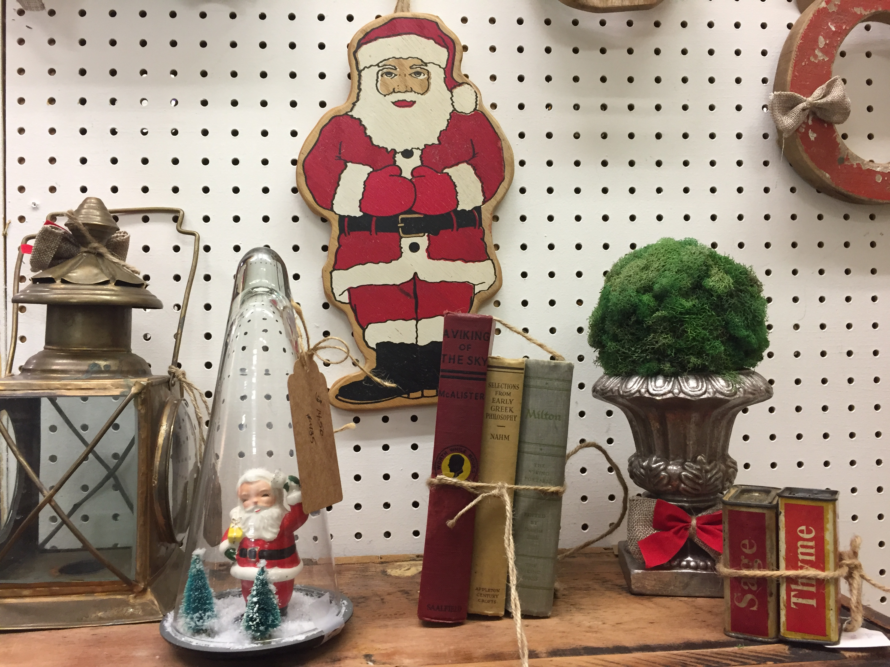
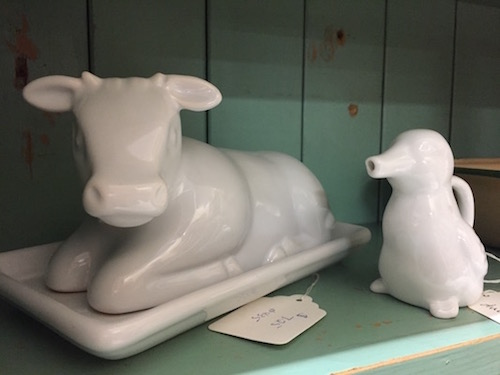
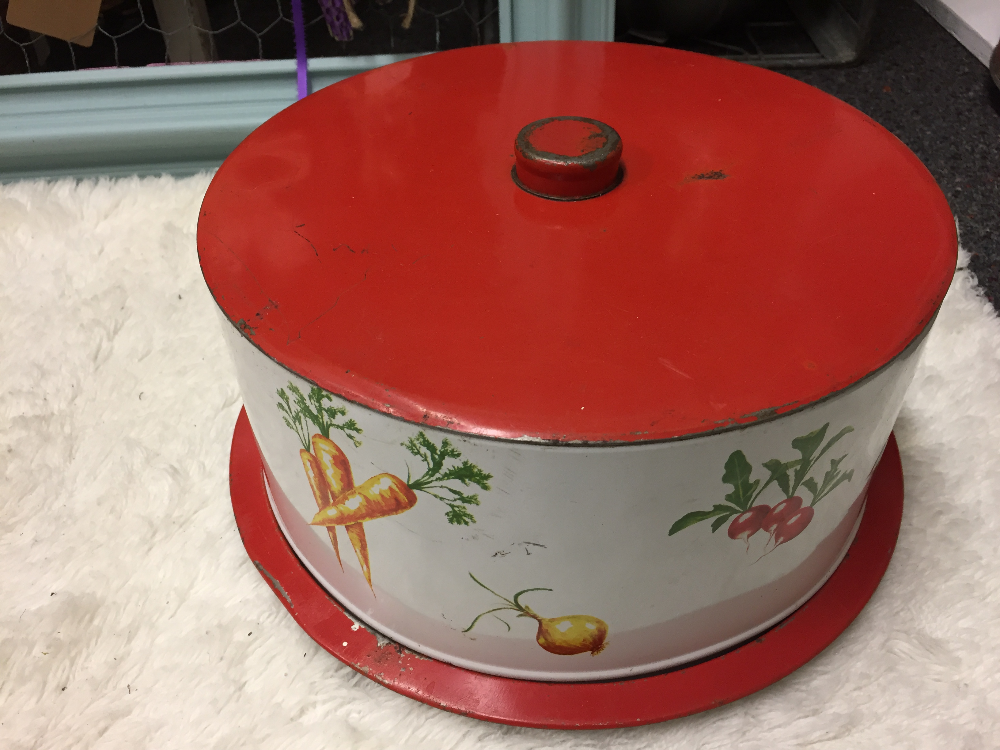
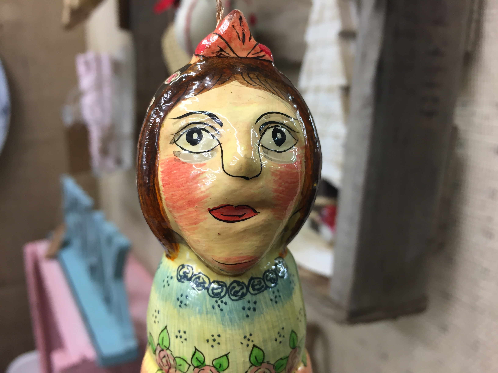
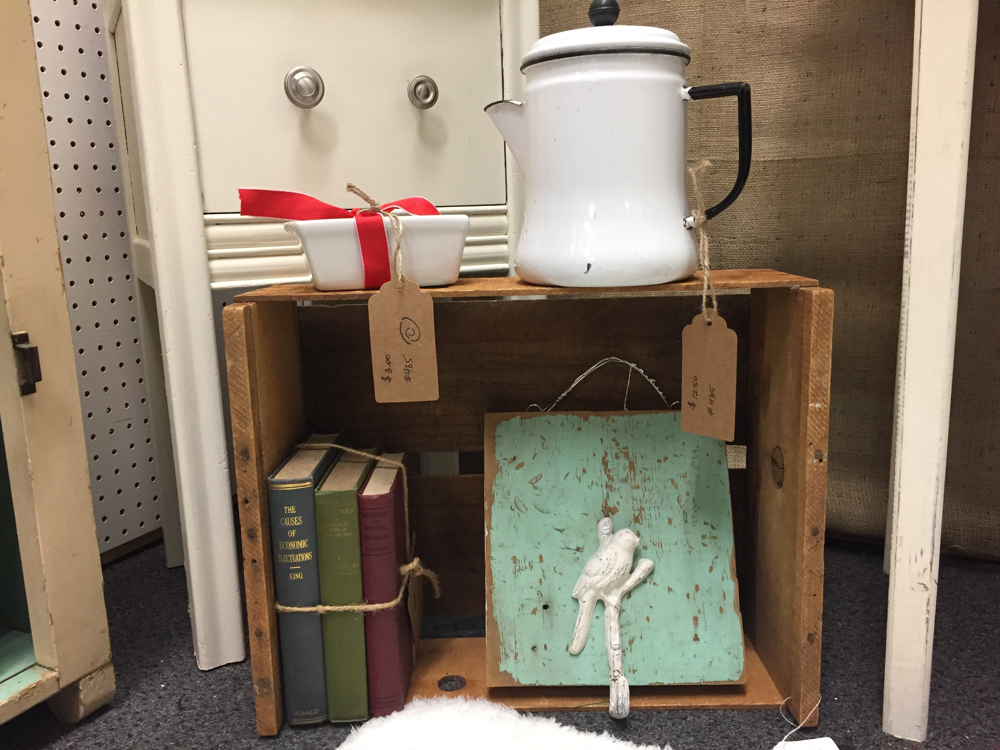

Holly'sBooth #435
Are you looking for a vintage ceramic dog? Or maybe a handcrafted holiday vignette? Or perhaps you're from the 1950s and just need a little help organizing your contacts?

As a regular Goodwill patron, Craigslist scrounger, and garage sale hobbyist, I thought it best to put all the vintage gems (bought and made alike) in a dedicated area. Come visit the booth at the Ashland Artisan Emporium.

If you've had your heart set on vintage kitchen ware, a handrcrafted ornament, or anything else not readily found online, let me know via email and I will keep my eyes peeled for you. Be sure to follow us on instagram for the latest items in the booth.